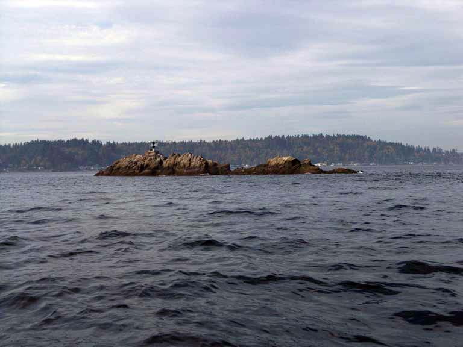
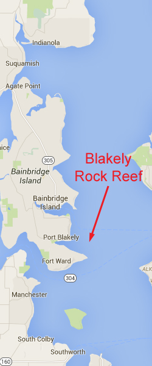
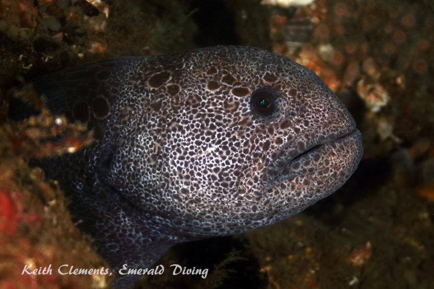
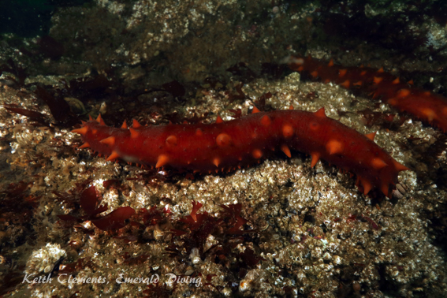
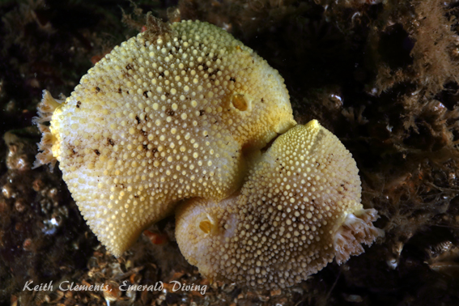
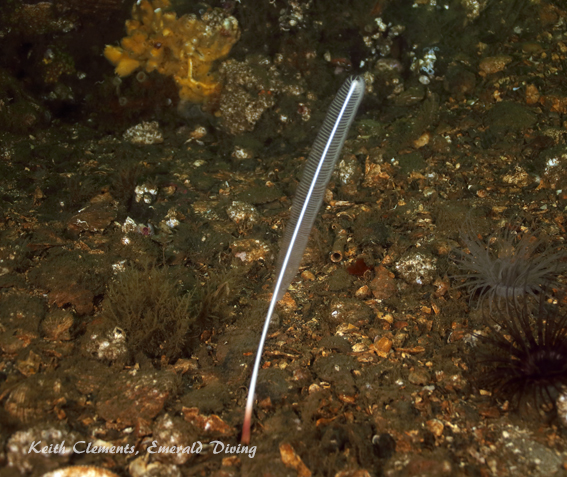
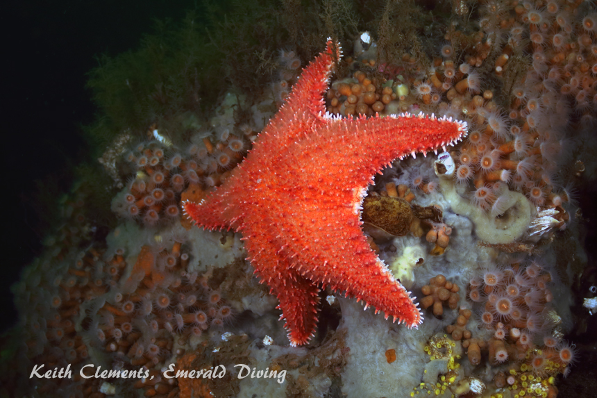
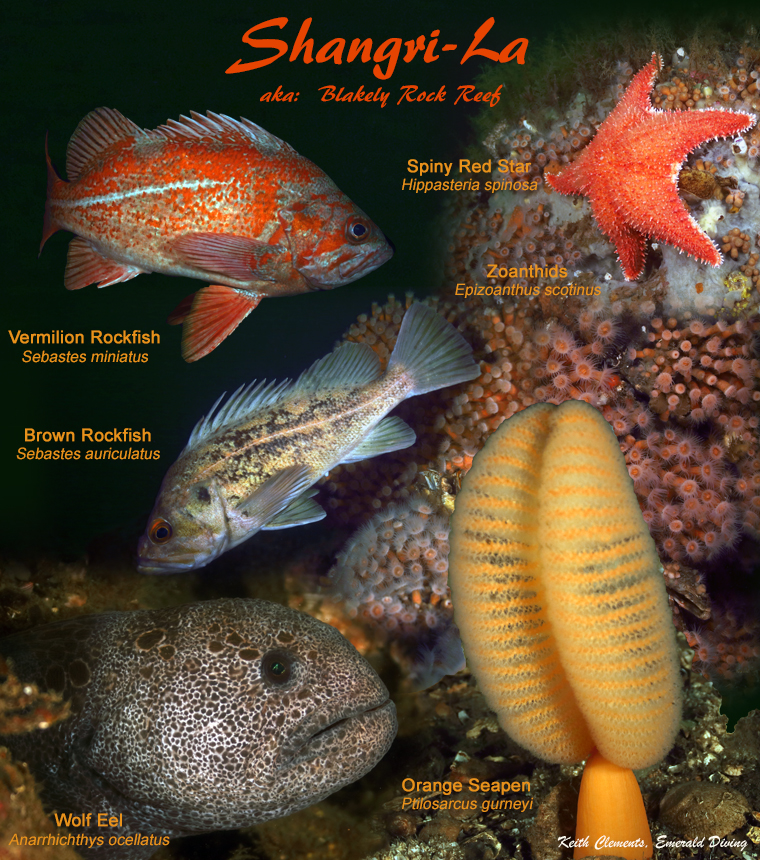

Blakely Rock Reef
Topography: Rocky reef strewn with small walls, ledges, and boulders.
Puget Sound marine life rating: 4
Puget Sound structure rating: 3
Diving Depth: 75 feet
Highlight: Frequent wolf eel and giant Pacific octopus sightings. Wide variety of colorful invertebrate species, including huge sea lemon nudibranchs.
Skill level: Intermediate
GPS coordinates: N47° 35.682’ W122° 28.684’
Access by boat: Blakely Rock prominently stands east of Blakely Harbor. The rock is readily visible at high tide and sports a large black and white navigation marker. This dive site is located on the east side of Blakely Rock and is currently (July 2016) marked with a buoy. The GPS coordinates listed above were taken while anchored at the buoy. I anchor at the coordinates when the buoy is not in place.
Shore access: None
Dive profile: This site is also referred to as Shangra-La, although I have no idea why - maybe there is a good story in there somewhere Anyway, this does not need to be a deep dive even thought the rock structure continues down to over 100 feet. Most of the interesting structure that is between 45 and 90 feet. But be warned - this is a very current intensive site.
As of July 2016, there is buoy marking this site. It disappears from time to time - sometimes for years at a time. The pin for the buoy lies about 10 feet south of the beginning of the wall. The reef at the market buoy lies east-west. The anchor for this market buoy is located fairly close to the the wall. The walls are not massive - maybe 10 feet high in places. The wall is pocked with fissures where wolf eels, octopus, rockfish and other Salish Sea wonders abound. Craggy boulders line the base of the wall, which also make excellent hiding places for fish and invertebrates alike.
The wall becomes shallower east and quickly fades , so I tend to work west along the wall. Eventually, the wall fade to the west, but rocky structure continues to the north down to over 100 feet. I often find octopus, wolf eel, and occasionally impressive schools of vermilion, copper, quilback, and brown rockfish on this part of the reef.
If the dive boat is being pushed to the north by wind or current, I can easily see the mooring line from the wall when I return. However, I make a mental note of a few distinctive physical features when I initially get to the wall so I have a good idea of where to re-acquire my ascent line at the end of my dive. If I can’t find the line, I head west into shallow water where I perform my safety stop. Areas of the reef gets slightly deeper to the west before getting shallower.
My preferred gas mix: EAN 34
Current observations:
Current Station: Admiralty Inlet
Noted Slack Corrections: None
This is a current intensive site. My observation is the reef is very exposed to ebbing current. It appears that a strong backeddy run south over this reef on an ebb, then deflects off restoration point and gets sucked into the north-bound current in the main channel. My good dives at this site are on the flood, although I tend to target light to moderate flooding current (1.5 knots or less at max). During the flood (even at max), I have only have experienced light to no current.
Boat Launch:
Don Armini boat ramp (West Seattle). Approximately 5 miles from the dive site.
Facilities: None
Hazards:
Current: Strong current off-slack and at slack during moderate and heavy exchanges.
Exposure: The east side of Blakely Rock is very exposed to wind. Surface conditions can deteriorate very quickly.
Boat traffic: Moderate boat traffic, especially during boating season. Sailboat regattas sometimes use Blakely Rock as a rounding point.
Fishing boats: Salmon and bottom fisherman occasionally work this general area.
Snagging hazards: Discarded fishing gear existing throughout this site, including fishing hooks, monofilament fishing line, and some small derelict fishing nets.
Marine life: A rocky reef and stiff current are two key ingredients needed for creating a marine life haven - and this site has both.
This site is a good bet for finding wolf eels and giant Pacific octopus. I have the most success finding wolf eels in the long, narrow fissure along the northern wall. I sometimes find large giant Pacific octopus sharing this fissure with wolf eels. Octopus also establish dens under many of the boulders in deeper water on the southern section of the reef. Percentage-wise, I see more giant Pacific octopus in the open more often at this site than any other.
Copper, quillback, and brown rockfish all thrive throughout this area. Vermilion rockfish are often found on the deeper reaches of the reef. Painted greenling, kelp greenling, small lingcod, and perch are abundant. Careful observation may yield a grunt sculpin, red Irish lord, buffalo sculpin, longfin sculpin, or warbonnet.
Invertebrate life flourishes on the hard and rocky reef structure. Large glass tunicates, huge sea lemon nudibranchs, and orange spotted nudibranchs are but a few of the spineless inhabitants. Sections of the reef are covered in colonies of beautiful zonathids and seeminly endless fields of acorn barnacles. There is also a decent selection of bryozoans and hydroids at this site. Broadleaf kelp grows thick during spring and summer over large sections of the reef, particularly in shallow areas. The substrate is home to countless tube-dwelling anemones and the occasional orange seapens. On one occasion, I even found a white seapen.
Blakely Rock serves as a refuge for a number of harbor seals. Curiosity occasionally gets the better of one of these shy mammals and it will come over to investigate a bubble blowing diver. I often see groups of seals sunning themselves on the north or west side of Blakely Rock on warm days.
Puget Sound marine life rating: 4
Puget Sound structure rating: 3
Diving Depth: 75 feet
Highlight: Frequent wolf eel and giant Pacific octopus sightings. Wide variety of colorful invertebrate species, including huge sea lemon nudibranchs.
Skill level: Intermediate
GPS coordinates: N47° 35.682’ W122° 28.684’
Access by boat: Blakely Rock prominently stands east of Blakely Harbor. The rock is readily visible at high tide and sports a large black and white navigation marker. This dive site is located on the east side of Blakely Rock and is currently (July 2016) marked with a buoy. The GPS coordinates listed above were taken while anchored at the buoy. I anchor at the coordinates when the buoy is not in place.
Shore access: None
Dive profile: This site is also referred to as Shangra-La, although I have no idea why - maybe there is a good story in there somewhere Anyway, this does not need to be a deep dive even thought the rock structure continues down to over 100 feet. Most of the interesting structure that is between 45 and 90 feet. But be warned - this is a very current intensive site.
As of July 2016, there is buoy marking this site. It disappears from time to time - sometimes for years at a time. The pin for the buoy lies about 10 feet south of the beginning of the wall. The reef at the market buoy lies east-west. The anchor for this market buoy is located fairly close to the the wall. The walls are not massive - maybe 10 feet high in places. The wall is pocked with fissures where wolf eels, octopus, rockfish and other Salish Sea wonders abound. Craggy boulders line the base of the wall, which also make excellent hiding places for fish and invertebrates alike.
The wall becomes shallower east and quickly fades , so I tend to work west along the wall. Eventually, the wall fade to the west, but rocky structure continues to the north down to over 100 feet. I often find octopus, wolf eel, and occasionally impressive schools of vermilion, copper, quilback, and brown rockfish on this part of the reef.
If the dive boat is being pushed to the north by wind or current, I can easily see the mooring line from the wall when I return. However, I make a mental note of a few distinctive physical features when I initially get to the wall so I have a good idea of where to re-acquire my ascent line at the end of my dive. If I can’t find the line, I head west into shallow water where I perform my safety stop. Areas of the reef gets slightly deeper to the west before getting shallower.
My preferred gas mix: EAN 34
Current observations:
Current Station: Admiralty Inlet
Noted Slack Corrections: None
This is a current intensive site. My observation is the reef is very exposed to ebbing current. It appears that a strong backeddy run south over this reef on an ebb, then deflects off restoration point and gets sucked into the north-bound current in the main channel. My good dives at this site are on the flood, although I tend to target light to moderate flooding current (1.5 knots or less at max). During the flood (even at max), I have only have experienced light to no current.
Boat Launch:
Don Armini boat ramp (West Seattle). Approximately 5 miles from the dive site.
Facilities: None
Hazards:
Current: Strong current off-slack and at slack during moderate and heavy exchanges.
Exposure: The east side of Blakely Rock is very exposed to wind. Surface conditions can deteriorate very quickly.
Boat traffic: Moderate boat traffic, especially during boating season. Sailboat regattas sometimes use Blakely Rock as a rounding point.
Fishing boats: Salmon and bottom fisherman occasionally work this general area.
Snagging hazards: Discarded fishing gear existing throughout this site, including fishing hooks, monofilament fishing line, and some small derelict fishing nets.
Marine life: A rocky reef and stiff current are two key ingredients needed for creating a marine life haven - and this site has both.
This site is a good bet for finding wolf eels and giant Pacific octopus. I have the most success finding wolf eels in the long, narrow fissure along the northern wall. I sometimes find large giant Pacific octopus sharing this fissure with wolf eels. Octopus also establish dens under many of the boulders in deeper water on the southern section of the reef. Percentage-wise, I see more giant Pacific octopus in the open more often at this site than any other.
Copper, quillback, and brown rockfish all thrive throughout this area. Vermilion rockfish are often found on the deeper reaches of the reef. Painted greenling, kelp greenling, small lingcod, and perch are abundant. Careful observation may yield a grunt sculpin, red Irish lord, buffalo sculpin, longfin sculpin, or warbonnet.
Invertebrate life flourishes on the hard and rocky reef structure. Large glass tunicates, huge sea lemon nudibranchs, and orange spotted nudibranchs are but a few of the spineless inhabitants. Sections of the reef are covered in colonies of beautiful zonathids and seeminly endless fields of acorn barnacles. There is also a decent selection of bryozoans and hydroids at this site. Broadleaf kelp grows thick during spring and summer over large sections of the reef, particularly in shallow areas. The substrate is home to countless tube-dwelling anemones and the occasional orange seapens. On one occasion, I even found a white seapen.
Blakely Rock serves as a refuge for a number of harbor seals. Curiosity occasionally gets the better of one of these shy mammals and it will come over to investigate a bubble blowing diver. I often see groups of seals sunning themselves on the north or west side of Blakely Rock on warm days.






Wolf Eel
Giant Pacific Octopus
Copper Rockfish
Red Sea Cucumber
Sea Lemon Nudibranchs
Underwater imagery from this site


White Sea Pen
Giant Pacific Octopus
Composite Photography From Blakely Rock Reef


Red Spiny Star
